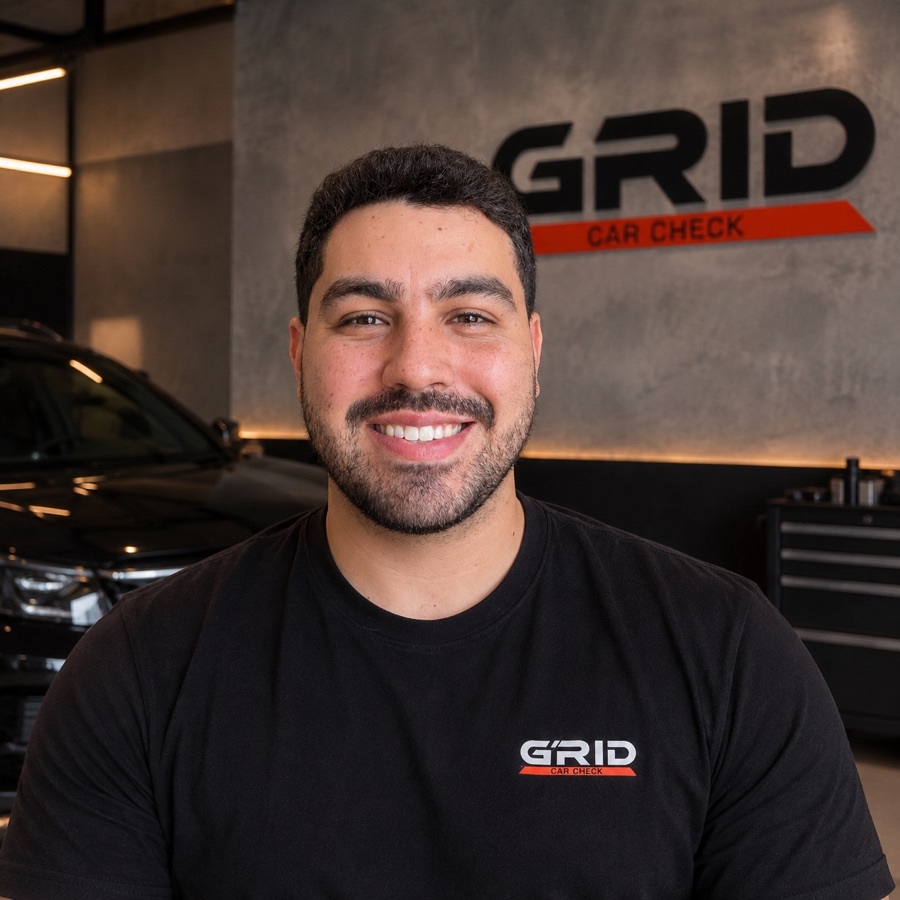

Estrutura
Sinais de batida anterior na estrutura do carro.
Vistoria pré-compra · Curitiba e região
Um especialista do seu lado confere o carro usado por 2,5 a 3,5 horas, manda vídeos ao vivo no WhatsApp e entrega um laudo com fotos.
Vistoria a partir de R$ 500
Sem comissão nem ligação com vendedor ou loja.
O que você não vê
Documento em dia não quer dizer carro em dia. Certas coisas passam batido no papel e no olho.
A Grid não acusa ninguém. Ela só mostra o que o carro realmente tem.
O que é inspecionado
Sinais de batida anterior na estrutura do carro.
O espessímetro mede a tinta e separa original de retoque ou repintura.
Como está a parte mecânica do carro no dia da vistoria.
Lê as falhas registradas na central do carro.
Confere os acessórios do carro.
Confere a documentação do veículo antes de você assinar.
A vistoria segue um roteiro do método do Matheus, registrado em app próprio.
Como funciona
Passo 1
Manda o modelo e o ano do carro que você está de olho.
Passo 2
Combina o horário direto com o vendedor ou a loja e vai até o carro.
Passo 3
Você recebe vídeos curtos no WhatsApp explicando o que está sendo encontrado.
Passo 4
O app gera o laudo completo. Comprar, negociar ou desistir é decisão sua.
Na prática
Land Rover Freelander 2 · 2010
Ver o Reel no InstagramO que a vistoria encontrou
O laudo também é evidência concreta para pedir desconto ao vendedor.
Preço
O valor varia conforme o preço do carro que você vai comprar.
| Valor do carro | Vistoria |
|---|---|
| Até R$ 100 mil | R$ 500 |
| De R$ 100 mil a R$ 300 mil | R$ 700 |
| De R$ 300 mil a R$ 500 mil | R$ 900 |
| De R$ 500 mil a R$ 1 milhão | R$ 1.200 |
Incluso em todas as faixas

Quem faz
Ele faz todas as vistorias pessoalmente. Não recebe comissão de vendedor nem de loja.
Criou um aplicativo próprio para seguir o mesmo roteiro em cada vistoria e gerar o laudo completo na hora, no local, sem depender de anotação solta.
A Grid informa. Comprar, negociar ou desistir é sempre decisão sua.
Dúvidas
De 2,5 a 3,5 horas, conforme o carro.
A Grid combina o horário direto com o vendedor ou a loja e vai até o carro.
Registro fotográfico, observações por categoria (estrutura, pintura, mecânica, scanner OBD, acessórios e documentação) e a opinião do especialista.
Sim. São nomes diferentes para o mesmo tipo de serviço: uma inspeção técnica do carro antes da compra, para revelar o que o documento e o olho não mostram.
A partir de R$ 500. O valor varia conforme o preço do carro: veja a tabela na seção de preço.
Não. A Grid mostra o que o carro tem. A decisão é sua.
Curitiba e região metropolitana.
Também na Grid
Sem tempo para garimpar? A Grid busca no mercado carros que atendem aos seus critérios e entrega já vistoriados.
Saber mais sobre o Car Hunter